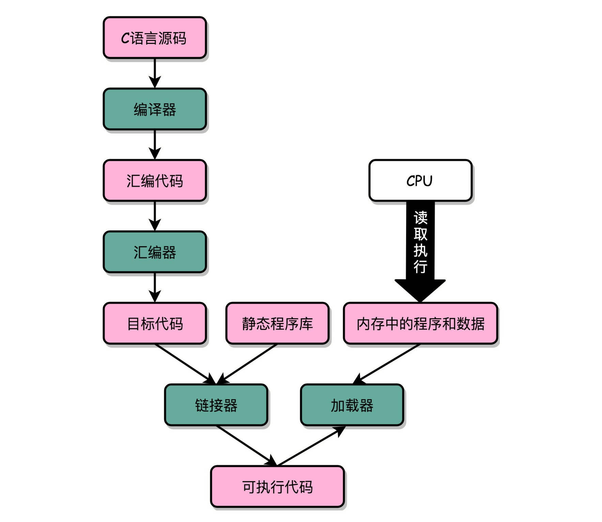
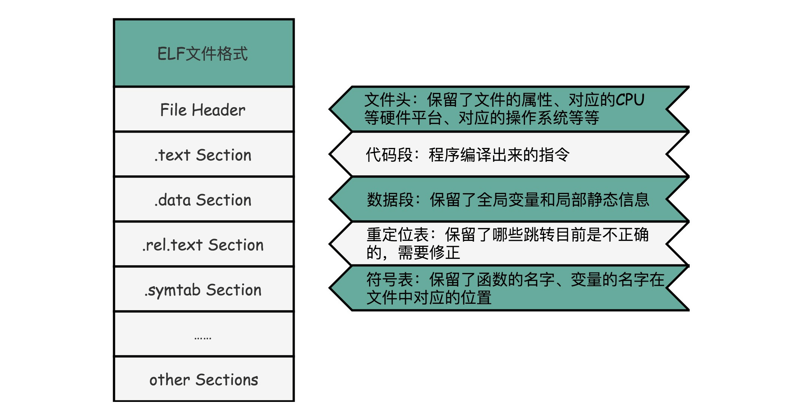
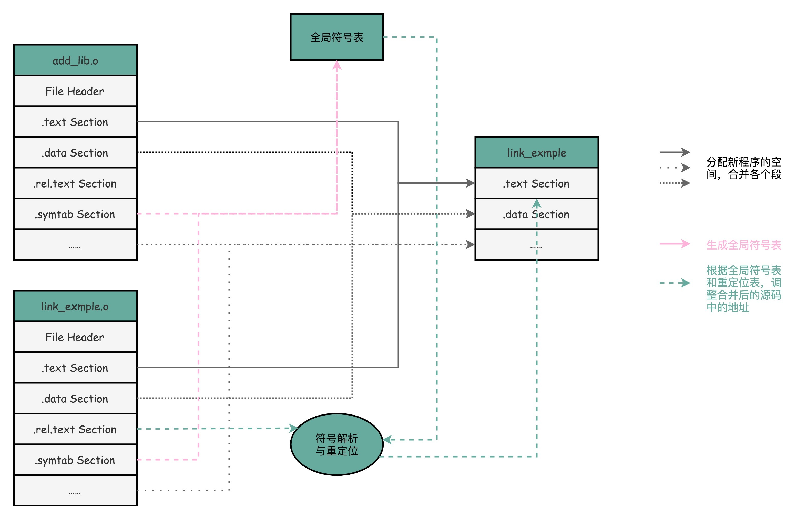

- 00 开篇词 为什么你需要学习计算机组成原理？.md.html
- 01 冯·诺依曼体系结构：计算机组成的金字塔.md.html
- 02 给你一张知识地图，计算机组成原理应该这么学.md.html
- 03 通过你的CPU主频，我们来谈谈“性能”究竟是什么？.md.html
- 04 穿越功耗墙，我们该从哪些方面提升“性能”？.md.html
- 05 计算机指令：让我们试试用纸带编程.md.html
- 06 指令跳转：原来if...else就是goto.md.html
- 07 函数调用：为什么会发生stack overflow？.md.html
- 08 ELF和静态链接：为什么程序无法同时在Linux和Windows下运行？.md.html
- 09 程序装载：“640K内存”真的不够用么？.md.html
- 10 动态链接：程序内部的“共享单车”.md.html
- 11 二进制编码：“手持两把锟斤拷，口中疾呼烫烫烫”？.md.html
- 12 理解电路：从电报机到门电路，我们如何做到“千里传信”？.md.html
- 13 加法器：如何像搭乐高一样搭电路（上）？.md.html
- 14 乘法器：如何像搭乐高一样搭电路（下）？.md.html
- 15 浮点数和定点数（上）：怎么用有限的Bit表示尽可能多的信息？.md.html
- 16 浮点数和定点数（下）：深入理解浮点数到底有什么用？.md.html
- 17 建立数据通路（上）：指令加运算=CPU.md.html
- 18 建立数据通路（中）：指令加运算=CPU.md.html
- 19 建立数据通路（下）：指令加运算=CPU.md.html
- 20 面向流水线的指令设计（上）：一心多用的现代CPU.md.html
- 21 面向流水线的指令设计（下）：奔腾4是怎么失败的？.md.html
- 22 冒险和预测（一）：hazard是“危”也是“机”.md.html
- 23 冒险和预测（二）：流水线里的接力赛.md.html
- 24 冒险和预测（三）：CPU里的“线程池”.md.html
- 25 冒险和预测（四）：今天下雨了，明天还会下雨么？.md.html
- 26 Superscalar和VLIW：如何让CPU的吞吐率超过1？.md.html
- 27 SIMD：如何加速矩阵乘法？.md.html
- 28 异常和中断：程序出错了怎么办？.md.html
- 29 CISC和RISC：为什么手机芯片都是ARM？.md.html
- 30 GPU（上）：为什么玩游戏需要使用GPU？.md.html
- 31 GPU（下）：为什么深度学习需要使用GPU？.md.html
- 32 FPGA、ASIC和TPU（上）：计算机体系结构的黄金时代.md.html
- 33 解读TPU：设计和拆解一块ASIC芯片.md.html
- 34 理解虚拟机：你在云上拿到的计算机是什么样的？.md.html
- 35 存储器层次结构全景：数据存储的大金字塔长什么样？.md.html
- 36 局部性原理：数据库性能跟不上，加个缓存就好了？.md.html
- 37 理解CPU Cache（上）：“4毫秒”究竟值多少钱？.md.html
- 38 高速缓存（下）：你确定你的数据更新了么？.md.html
- 39 MESI协议：如何让多核CPU的高速缓存保持一致？.md.html
- 40 理解内存（上）：虚拟内存和内存保护是什么？.md.html
- 41 理解内存（下）：解析TLB和内存保护.md.html
- 42 总线：计算机内部的高速公路.md.html
- 43 输入输出设备：我们并不是只能用灯泡显示“0”和“1”.md.html
- 44 理解IO_WAIT：IO性能到底是怎么回事儿？.md.html
- 45 机械硬盘：Google早期用过的“黑科技”.md.html
- 46 SSD硬盘（上）：如何完成性能优化的KPI？.md.html
- 47 SSD硬盘（下）：如何完成性能优化的KPI？.md.html
- 48 DMA：为什么Kafka这么快？.md.html
- 49 数据完整性（上）：硬件坏了怎么办？.md.html
- 50 数据完整性（下）：如何还原犯罪现场？.md.html
- 51 分布式计算：如果所有人的大脑都联网会怎样？.md.html
- 52 设计大型DMP系统（上）：MongoDB并不是什么灵丹妙药.md.html
- 53 设计大型DMP系统（下）：SSD拯救了所有的DBA.md.html
- 54 理解Disruptor（上）：带你体会CPU高速缓存的风驰电掣.md.html
- 55 理解Disruptor（下）：不需要换挡和踩刹车的CPU，有多快？.md.html
- 结束语 知也无涯，愿你也享受发现的乐趣.md.html
08 ELF和静态链接：为什么程序无法同时在Linux和Windows下运行？
过去的三节，你和我一起通过一些简单的代码，看到了我们写的程序，是怎么变成一条条计算机指令的；if…else 这样的条件跳转是怎么样执行的；for/while 这样的循环是怎么执行的；函数间的相互调用是怎么发生的。
我记得以前，我自己在了解完这些知识之后，产生了一个非常大的疑问。那就是，既然我们的程序最终都被变成了一条条机器码去执行，那为什么同一个程序，在同一台计算机上，在 Linux 下可以运行，而在 Windows 下却不行呢？反过来，Windows 上的程序在 Linux 上也是一样不能执行的。可是我们的 CPU 并没有换掉，它应该可以识别同样的指令呀？
如果你和我有同样的疑问，那这一节，我们就一起来解开。
编译、链接和装载：拆解程序执行
[第 5 节]我们说过，写好的 C 语言代码，可以通过编译器编译成汇编代码，然后汇编代码再通过汇编器变成 CPU 可以理解的机器码，于是 CPU 就可以执行这些机器码了。你现在对这个过程应该不陌生了，但是这个描述把过程大大简化了。下面，我们一起具体来看，C 语言程序是如何变成一个可执行程序的。
不知道你注意到没有，过去几节，我们通过 gcc 生成的文件和 objdump 获取到的汇编指令都有些小小的问题。我们先把前面的 add 函数示例，拆分成两个文件 add_lib.c 和 link_example.c。
// add_lib.c
int add(int a, int b)
{
return a+b;
}
// link_example.c
#include <stdio.h>
int main()
{
int a = 10;
int b = 5;
int c = add(a, b);
printf("c = %d\n", c);
}
我们通过 gcc 来编译这两个文件，然后通过 objdump 命令看看它们的汇编代码。
$ gcc -g -c add_lib.c link_example.c
$ objdump -d -M intel -S add_lib.o
$ objdump -d -M intel -S link_example.o
add_lib.o: file format elf64-x86-64
Disassembly of section .text:
0000000000000000 <add>:
0: 55 push rbp
1: 48 89 e5 mov rbp,rsp
4: 89 7d fc mov DWORD PTR [rbp-0x4],edi
7: 89 75 f8 mov DWORD PTR [rbp-0x8],esi
a: 8b 55 fc mov edx,DWORD PTR [rbp-0x4]
d: 8b 45 f8 mov eax,DWORD PTR [rbp-0x8]
10: 01 d0 add eax,edx
12: 5d pop rbp
13: c3 ret
link_example.o: file format elf64-x86-64
Disassembly of section .text:
0000000000000000 <main>:
0: 55 push rbp
1: 48 89 e5 mov rbp,rsp
4: 48 83 ec 10 sub rsp,0x10
8: c7 45 fc 0a 00 00 00 mov DWORD PTR [rbp-0x4],0xa
f: c7 45 f8 05 00 00 00 mov DWORD PTR [rbp-0x8],0x5
16: 8b 55 f8 mov edx,DWORD PTR [rbp-0x8]
19: 8b 45 fc mov eax,DWORD PTR [rbp-0x4]
1c: 89 d6 mov esi,edx
1e: 89 c7 mov edi,eax
20: b8 00 00 00 00 mov eax,0x0
25: e8 00 00 00 00 call 2a <main+0x2a>
2a: 89 45 f4 mov DWORD PTR [rbp-0xc],eax
2d: 8b 45 f4 mov eax,DWORD PTR [rbp-0xc]
30: 89 c6 mov esi,eax
32: 48 8d 3d 00 00 00 00 lea rdi,[rip+0x0] # 39 <main+0x39>
39: b8 00 00 00 00 mov eax,0x0
3e: e8 00 00 00 00 call 43 <main+0x43>
43: b8 00 00 00 00 mov eax,0x0
48: c9 leave
49: c3 ret
既然代码已经被我们“编译”成了指令，我们不妨尝试运行一下 ./link_example.o。
不幸的是，文件没有执行权限，我们遇到一个 Permission denied 错误。即使通过 chmod 命令赋予 link_example.o 文件可执行的权限，运行./link_example.o 仍然只会得到一条 cannot execute binary file: Exec format error 的错误。
我们再仔细看一下 objdump 出来的两个文件的代码，会发现两个程序的地址都是从 0 开始的。如果地址是一样的，程序如果需要通过 call 指令调用函数的话，它怎么知道应该跳转到哪一个文件里呢？
这么说吧，无论是这里的运行报错，还是 objdump 出来的汇编代码里面的重复地址，都是因为 add_lib.o 以及 link_example.o 并不是一个可执行文件（Executable Program），而是目标文件（Object File）。只有通过链接器（Linker）把多个目标文件以及调用的各种函数库链接起来，我们才能得到一个可执行文件。
我们通过 gcc 的 -o 参数，可以生成对应的可执行文件，对应执行之后，就可以得到这个简单的加法调用函数的结果。
$ gcc -o link-example add_lib.o link_example.o
$ ./link_example
c = 15
实际上，“C 语言代码 - 汇编代码 - 机器码” 这个过程，在我们的计算机上进行的时候是由两部分组成的。
第一个部分由编译（Compile）、汇编（Assemble）以及链接（Link）三个阶段组成。在这三个阶段完成之后，我们就生成了一个可执行文件。
第二部分，我们通过装载器（Loader）把可执行文件装载（Load）到内存中。CPU 从内存中读取指令和数据，来开始真正执行程序。

ELF 格式和链接：理解链接过程
程序最终是通过装载器变成指令和数据的，所以其实我们生成的可执行代码也并不仅仅是一条条的指令。我们还是通过 objdump 指令，把可执行文件的内容拿出来看看。
link_example: file format elf64-x86-64
Disassembly of section .init:
...
Disassembly of section .plt:
...
Disassembly of section .plt.got:
...
Disassembly of section .text:
...
6b0: 55 push rbp
6b1: 48 89 e5 mov rbp,rsp
6b4: 89 7d fc mov DWORD PTR [rbp-0x4],edi
6b7: 89 75 f8 mov DWORD PTR [rbp-0x8],esi
6ba: 8b 55 fc mov edx,DWORD PTR [rbp-0x4]
6bd: 8b 45 f8 mov eax,DWORD PTR [rbp-0x8]
6c0: 01 d0 add eax,edx
6c2: 5d pop rbp
6c3: c3 ret
00000000000006c4 <main>:
6c4: 55 push rbp
6c5: 48 89 e5 mov rbp,rsp
6c8: 48 83 ec 10 sub rsp,0x10
6cc: c7 45 fc 0a 00 00 00 mov DWORD PTR [rbp-0x4],0xa
6d3: c7 45 f8 05 00 00 00 mov DWORD PTR [rbp-0x8],0x5
6da: 8b 55 f8 mov edx,DWORD PTR [rbp-0x8]
6dd: 8b 45 fc mov eax,DWORD PTR [rbp-0x4]
6e0: 89 d6 mov esi,edx
6e2: 89 c7 mov edi,eax
6e4: b8 00 00 00 00 mov eax,0x0
6e9: e8 c2 ff ff ff call 6b0 <add>
6ee: 89 45 f4 mov DWORD PTR [rbp-0xc],eax
6f1: 8b 45 f4 mov eax,DWORD PTR [rbp-0xc]
6f4: 89 c6 mov esi,eax
6f6: 48 8d 3d 97 00 00 00 lea rdi,[rip+0x97] # 794 <_IO_stdin_used+0x4>
6fd: b8 00 00 00 00 mov eax,0x0
702: e8 59 fe ff ff call 560 <[email protected]>
707: b8 00 00 00 00 mov eax,0x0
70c: c9 leave
70d: c3 ret
70e: 66 90 xchg ax,ax
...
Disassembly of section .fini:
...
你会发现，可执行代码 dump 出来内容，和之前的目标代码长得差不多，但是长了很多。因为在 Linux 下，可执行文件和目标文件所使用的都是一种叫ELF（Execuatable and Linkable File Format）的文件格式，中文名字叫可执行与可链接文件格式，这里面不仅存放了编译成的汇编指令，还保留了很多别的数据。
比如我们过去所有 objdump 出来的代码里，你都可以看到对应的函数名称，像 add、main 等等，乃至你自己定义的全局可以访问的变量名称，都存放在这个 ELF 格式文件里。这些名字和它们对应的地址，在 ELF 文件里面，存储在一个叫作符号表（Symbols Table）的位置里。符号表相当于一个地址簿，把名字和地址关联了起来。
我们先只关注和我们的 add 以及 main 函数相关的部分。你会发现，这里面，main 函数里调用 add 的跳转地址，不再是下一条指令的地址了，而是 add 函数的入口地址了，这就是 EFL 格式和链接器的功劳。

ELF 文件格式把各种信息，分成一个一个的 Section 保存起来。ELF 有一个基本的文件头（File Header），用来表示这个文件的基本属性，比如是否是可执行文件，对应的 CPU、操作系统等等。除了这些基本属性之外，大部分程序还有这么一些 Section：
- 首先是.text Section，也叫作代码段或者指令段（Code Section），用来保存程序的代码和指令；
- 接着是.data Section，也叫作数据段（Data Section），用来保存程序里面设置好的初始化数据信息；
- 然后就是.rel.text Secion，叫作重定位表（Relocation Table）。重定位表里，保留的是当前的文件里面，哪些跳转地址其实是我们不知道的。比如上面的 link_example.o 里面，我们在 main 函数里面调用了 add 和 printf 这两个函数，但是在链接发生之前，我们并不知道该跳转到哪里，这些信息就会存储在重定位表里；
- 最后是.symtab Section，叫作符号表（Symbol Table）。符号表保留了我们所说的当前文件里面定义的函数名称和对应地址的地址簿。
链接器会扫描所有输入的目标文件，然后把所有符号表里的信息收集起来，构成一个全局的符号表。然后再根据重定位表，把所有不确定要跳转地址的代码，根据符号表里面存储的地址，进行一次修正。最后，把所有的目标文件的对应段进行一次合并，变成了最终的可执行代码。这也是为什么，可执行文件里面的函数调用的地址都是正确的。

在链接器把程序变成可执行文件之后，要装载器去执行程序就容易多了。装载器不再需要考虑地址跳转的问题，只需要解析 ELF 文件，把对应的指令和数据，加载到内存里面供 CPU 执行就可以了。
总结延伸
讲到这里，相信你已经猜到，为什么同样一个程序，在 Linux 下可以执行而在 Windows 下不能执行了。其中一个非常重要的原因就是，两个操作系统下可执行文件的格式不一样。
我们今天讲的是 Linux 下的 ELF 文件格式，而 Windows 的可执行文件格式是一种叫作PE（Portable Executable Format）的文件格式。Linux 下的装载器只能解析 ELF 格式而不能解析 PE 格式。
如果我们有一个可以能够解析 PE 格式的装载器，我们就有可能在 Linux 下运行 Windows 程序了。这样的程序真的存在吗？没错，Linux 下著名的开源项目 Wine，就是通过兼容 PE 格式的装载器，使得我们能直接在 Linux 下运行 Windows 程序的。而现在微软的 Windows 里面也提供了 WSL，也就是 Windows Subsystem for Linux，可以解析和加载 ELF 格式的文件。
我们去写可以用的程序，也不仅仅是把所有代码放在一个文件里来编译执行，而是可以拆分成不同的函数库，最后通过一个静态链接的机制，使得不同的文件之间既有分工，又能通过静态链接来“合作”，变成一个可执行的程序。
对于 ELF 格式的文件，为了能够实现这样一个静态链接的机制，里面不只是简单罗列了程序所需要执行的指令，还会包括链接所需要的重定位表和符号表。